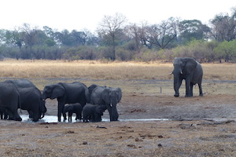

- Travel Navigator
- Current Tours
- Women's Tours
- Exotic Travel
- Special Group Tours
- Image Gallery
- Cape Town Flora
- Savuti Camp, Botswana
- Tubu Tree Camp, Botswana
- Chitabe Lediba, Botswana
- Jack's Camp, Botswana
- Ruckomechi, Zimbabwe
- 2015 Ecuador-Napo Jungle
- 2014 Mandrare, Madagascar
- 2014 Manafiafy, Madagascar
- 2014 Andisibe, Madagascar
- 2014 Masaola, Madagascar
- 2013 Galapagos Tour
- 2012 Primates Primer, Uganda
- 2010 Women's Walking Tour, Kenya
- 2009 Amazon Botanical Tour
- 2009 SE Asia Tour
- 2009 Buenos Aires Art Tour
- 2008 South Africa & Madagascar
- Macchu Picchu, Peru
- Past Trip Archive
- 2014 Textiles Tour of Burma
- 2013 Karisia, Kenya Women’s Walking Safari
- 2013 Textiles Tour of Burma
- 2013 NTBG - Southern India
- Northern India Textiles Tour 2011
- Visual Arts Tour of Buenos Aires 2009
- NTBG Amazon 2009
- Womens Tour of South East Asia 2009
- NTBG Madagascar & South Africa 2008
- Women's Baja Adventure 2007
- Cultures and Arts of South India 2007
- NTBG Myanmar & Thailand Tour 2004
- Women's Tibet Trek 2004
- NTBG Bhutan Tour 2002
- Cantores France Tour 2002
- Women's Tibet & Nepal Adventure 2000
- About Us
- Contact
Terra Nova Travel
Professional trip designing for the inquisitive, independent and intrepid
Return to a day in the life on safari Botswana
Savuti Camp
While one can never recapture the original experience of one's "first love "' my return visit to my first safari destination, Botswana after a 19 year hiatus did not disappoint. I was pleased to find that the wilderness remained pristine and that Wilderness Safaris had developed many of their camps in the Okavango Delta according to their "4Cs" doctrine, commerce, community, conservation, and culture. Of the three camps, each situated in three distinct geographic areas of the delta, Savuti Camp best epitomized the 4Cs. Since my 1997 visit to Savuti and Chitabe, in keeping with the demand, Wilderness has greatly upgraded the accommodations and food service, but more importantly Wilderness Safaris has continued to develop the the conservation, community and culture aspects of the 4Cs.
 |
 |
|
| Savuti Room 1997 | Savuti Room 2016 | |
Conservation
As of this last year, the Savute channel has begun to dry up. This wet/dry cycle that occurs about every ten years requires that the animals who reside in this region adapt to the altered water flow. Elephants, who dominate the Chobe/Linyanti area of the delta, begin to concentrate along the Chobe River where there is an abundant water source. This not only places pressure on the water resources, but also the vegetation along the river. To relieve this over grazing, Wilderness Safaris, in collaboration with the Botswana government, has agreed to maintain the Savuti pan(water hole) located in front of the main lodge. The water is pumped into the pan on a timer and the clever elephants know when the "faucet" is turned on!
 |
 |
| Savuti Pan 1997 | Savuti Pan 2016 |
From a camp management standpoint, Wilderness has continued to expand their commitment to solar energy and recycling in orders to reduce the lodges' impact on the delta.
Community
Wilderness' Internal Community or "the Wilderness Tribe" have evolved over the ensuing 19 years to include staff and guides from Botswana. This employment and training of local residents creates a tremendous bond with the local communities who then benefit directly and have a vested interest in conservation of the delta. Savuti's management team consisted of Mama Bee (relief manager), Sarita, and Elena. These ladies ran a tight ship, but the esprit de corps was always present. When I casually mentioned that I liked their chili jam and had a recipe for jalapeño lime ice cream, they immediately invited me to make the ice cream for dessert at dinner that night!
The real heart of any safari camp are the guides. My colleague, Lynn, and I were privileged to have a fantastic guide, Goodman. He definitely lived up to his name in every way. From our first game drive, Goodman turned to us and said, " I have read the newspaper today". He would proceed to then relate a few of the headlines ,but as any good reporter would do, he would then drive us to the scene of the "crime." On our first afternoon game drive the beat was the rotting Cape buffalo carcass being devoured by flies. During our three night stay, our reporter's beat took us to the haunts of the leopard, lion, cheetah, elephant and a sleep out in the bush. Lynn even received a safari driver's lesson.
 The highlight of our stay was our "cops and robbers" chase in pursuit of the resident wild dog pack. Goodman's strategy was to "follow the puppies and you'll find the adults." This tactic paid off and we witnessed not only the spoils of the hunt, but the touching scene of the adults returning to feed the puppies regurgitated impala. I invite you to view my little slideshow on "a day in the life on safari at Savuti Camp" beginning with my small aircraft flight from Victoria Falls to the Savuti airstrip to my departure for next camp, Tubu Tree, with elephant grazing in the airstrip bushes!
The highlight of our stay was our "cops and robbers" chase in pursuit of the resident wild dog pack. Goodman's strategy was to "follow the puppies and you'll find the adults." This tactic paid off and we witnessed not only the spoils of the hunt, but the touching scene of the adults returning to feed the puppies regurgitated impala. I invite you to view my little slideshow on "a day in the life on safari at Savuti Camp" beginning with my small aircraft flight from Victoria Falls to the Savuti airstrip to my departure for next camp, Tubu Tree, with elephant grazing in the airstrip bushes!
View Savuti Wilderness Camp slideshow